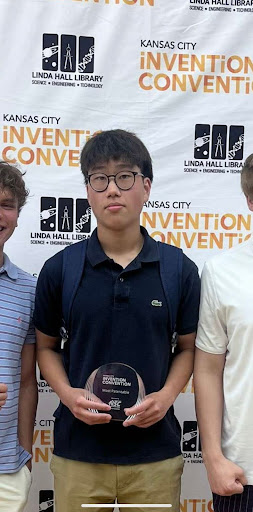

Welcome to my resume page
I am a student at JCCC, my first year of college, studying Computer Science. Web design is my favorite class, and I enjoy creating clean, functional websites.
My Picture
About Me
I have experience in Python and C++. In high school, I won the "Most Patentable" award at the Kansas city convention for my creation in my entrepreneurship class. I like to think of my self as a creative person, that's why I enjoy this class so much. It would be great if one day I could be a Web Designer for my profession.